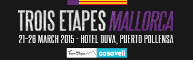

El servicio de telefonía fija es la principal actividad de Cotesma. Brinda cobertura a la totalidad de la población de San Martín de los Andes y zonas aledañas, logrando la posibilidad de una conexión telefónica al 100% de la población.
En la última década se ha extendido la cobertura y la calidad tecnológica. Se han hecho grandes inversiones que han cambiado la realidad de nuestra ciudad y la región en forma determinante.
Todos los equipos utilizados por Cotesma son de última generación e intentan estar a la vanguardia de la tecnología en la región. La combinación entre infraestructura y personal capacitado generan una unidad económica y de servicios pujante y en permanente crecimiento.
Además ofrece los servicios de: Telefonía pública y semi pública, Locutorios, Servicio Prepago con tarjetas.
Cotesma permite que San Martín de los Andes sea parte activa del mundo de las comunicaciones. Internet es un pilar fundamental de los servicios que comprometen a la cooperativa con la comunidad.
Cotesma focaliza sus inversiones y atención en el desarrollo de estos servicios clave para San Martín de los Andes, porque es cada vez más evidente que estas serán las redes que conecten al mundo.
La calidad y la velocidad en las conexiones a internet es una demanda permanente. En ese contexto Cotesma invierte y brinda diferentes planes de banda ancha.
Cuenta además con una plataforma online: www.cotemax.com
La telefonía celular Nuestro es un novedoso emprendimiento del Cooperativismo, desarrollado por la Federación de Cooperativas, un paso más en firme que da Cotesma, con la misma fuerza que lanzó hace años el servicio de banda ancha, demostrando que se puede brindar un servicio eficiente y serio.
Nuestro, como se denomina la marca del nuevo emprendimiento de la Cooperativa, funciona como cualquier otra compañía de telefonía celular, a diferencia de que las divisas logradas por esta prestación quedarán pura y exclusivamente en la localidad.
La telefonía móvil es el presente y el futuro de las comunicaciones y Cotesma está siempre a la vanguardia.
El CEC, Centro de Estudios Cotesma ha sido creado con la finalidad de poder brindar a los residentes de nuestra ciudad la posibilidad de poder acceder a programas de estudio de instituciones educativas de primer nivel.
A través del CEC los alumnos cuentan con el soporte y la estructura tecnológica necesaria para cursar sus estudios a distancia.
Esta institución funciona en un histórico inmueble de San Martín de los Andes que es patrimonio arquitectónico de nuestra ciudad, construído en 1910 manteniendo su fachada y estilo original.
El histórico Cine Amankay, uno de los primeros espacios culturales de San Martín de los Andes, fue fundado en la década del 50, por los pobladores Obeid, Weber y Chidiak.
En el año '83, el cine es adquirido por Cotesma con el fin de rescatar este importante medio para la vida cultural del pueblo, y se inicia una nueva Comisión Cultural en la Cooperativa. Para ese entonces, el cine contaba con una única sala.
En el año '86, el Consejo de Administración de la Cooperativa gestiona un crédito del Fondo Nacional de las Artes, para construír el establecimiento que conocemos actualmente.
El 20 de Junio de 1971, bajo la administración de Cotesma y luego de un importante esfuerzo, se inaugura el complejo con dos salas y pasa a denominarse Centro Cultural Amankay. Más adelante en el año '96, la antigua e histórica sala 1 se declara Patrimonio Histórico y Cultural de San Martín de los Andes.